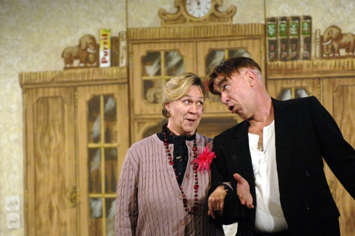

IMDB-Wertung: 5.0 / 10
IMDB-Wertung: 5.0 / 10  Metascore:
Metascore: 
Find showtimes, watch trailers, browse photos, track your Watchlist and rate your favorite movies and TV shows on your phone or tablet!
 IMDB-Wertung: 5.0 / 10 Metascore:
Find showtimes, watch trailers, browse photos, track your Watchlist and rate your favorite movies and TV shows on your phone or tablet!
Jahr: 2007
Dauer: 28 Minuten
FSK:
Land: Deutschland Studio: WDRTonspuren:
Untertitel:
Auflösung: 720p (1280x720) Größe: 251 MB
Regisseur: Georg Habertheuer, Thomas Rech
Drehbuch: T.J. Cimfel
Soundtrack:
Darsteller:
Datei: X:\SD-Serien\Dinner For One\Dinner vor Wan(ne) (2007, FSK, 1280x720).mp4 seit 07.04.2017
 Alle Filme aus Gruppe 'SD-Serien'
Alle Filme aus Gruppe 'SD-Serien'